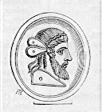

(Gregory Nazianzen), Julian the Emperor (1888) Index
Absurdities of Paganism, 77.A.
B.
Barbatio sent into Gaul, 138.
Barbers, cooks, eunuchs, of the
Palace, 162.
Basil and Gregory, Julian's
friendship with,
Basilina, Julian's mother, 13.
Banditti enlisted, 154.
Beauty, the Intelligible, 236.
Belus, same with Serapis, 271.
Billon coinage, real origin of,
164.
Blood, magic mirror of, 106.
Blood of Martyrs, kept as relics,
39.
Boats used for penthouse, 196.
Branding, Mithraic, 39.
Brick fortifications, 196.
Britain, exportation of corn
from, 138.
-------- peculation of the Governor,
147.
British corn-fleet sails up the
Rhine, 147.
Buffoons and mimes at funerals,
101.
Buffoons kept in the camp, 96.
Bull Apis, made sport of, 44.
Burying alive, punishment of,
159.
C.
Canal joining Euphrates with Tigris, 201.
Candlestick, the golden, 114.
Capitation-tax, proposed reduction of, 211.
Casius, Mount, 175.
Castle, siege of a, 196.
Castration of Attis, typical, 265.
Castalian Fount silenced, 111.
Catamite, sacrifices to Nile, 112.
Cataphractus, 187.
''Catholics" persecuted by Constantius, 21.
Cave used for magic, 31.
Celebration of victory, 114.
Celsus, Prefect of Cilicia, 171.
Chameleon, simile of, 35.
Charbonesus, river, 190.
Chastity of Julian, 177.
Chevaux de frise, portable, 194.
Christian institutions aped by Julian, 74, 75.
Christianity, final triumph of,
212.
Christians, how ridiculed by
Julian, 105.
Cigale, their music, 176.
Clibanarii, heavy cavalry, 134.
Clodia and her zone, 255.
"Commentaries," Julian's, 138.
Constans', edicts of, 66.
Constantius calls the Germans
into Gaul, 133.
-------- funeral of, 158.
Constantius' letters to the Germans exhibited, 138.
-------- mode of campaigning, 189.
-------- persecution of the "Catholics," 21.
Constantius poisoned, 27.
-------- stirs up the Germans
against Julian, 157.
Continence, why enforced, 267.
-------- why enjoined, 273.
Conversion of the army, easy,
36.
Corn trade, British, 138.
Corrupt practices of Constantius'
officials, 163-4-5.
Corybantes, the Seasons, 266.
Corybas, title of Sun, 264.
"Counsel of Perfection," 66.
Counters for calculation, 119.
Courtesans, procession of, 104.
Court-servants, innumerable,
162.
Cowardice, how punished, 193.
Cowardice of Constantius' troops, 188.
Cowardice of Constantius' troops, accounted for, 173.
Creative powers, numerous, 231.
Cross appearing in the heavens, 91.
------------ crowned, omen of, 30.
------------ how pre-figured, 11.
------------ miraculous impressions of the, 89.
------------ miraculously printed upon
Jews' garments, 91.
Crossing oneself at meals, 51.
-------- in alarm, 31.
Crowns of gold offered by cities, 174.
Ctesiphon, battle of, 202.
-------- described, 93.
Cup, Julian's magic, 176.
Curiales, re-establishment of the, 167.
"Cynics, Against ignorant,"
when written, 171.
Cynosarges, infants exposed in,
70.
Cyprus, Temple of Sun in, 235.
D.
Damary, forgers' mint at, 164.
Dante's Circular Natura, 261.
Daphne, a mere tree, 111.
Deification of Julian, 215.
Ded, identical with Mother of
the Gods, 254.
Diadem, Julian's dislike of the,
182.
-------- not used by Magnentius, ib.
"Descent into the cave," explained, 269.
Dionysius, Plato's Epistle to, 221.
Dionysos, equivalent of Sun, 236.
Dioscuri, type of alternations, 239.
Discipline, Julian's strict, 193.
Doctrines, Christian, kept secret from the vulgar, 180.
Domitianus murdered, 130.
Dragon, military ensign, 37.
Drunkenness punished, 191.
Divination, Julian's skill in,
178.
E.
Earthquake in Thrace, 176.
-------- the great, of 365, 213.
Ecdicius, Julian's tutor, 125.
Edessa, City of the Sun, 244.
Eighth Revolution, the, 239.
Empedocles, the "Harmony"
of, 229.
"Epaphroditus," Hermes, 279.
Epic metre, origin of, 72.
Esoteric Christian doctrines, 80.
Eternity of the universe, 221.
-------- of visible world, 238.
Eulogies, string of, 209.
Eusebia protects Julian, 131.
Eusebius, the eunuch, put to death,168.
Extortion, various modes of,
164.
F.
Failure of the Persian expedition, 203.
Fakirs, Christian, 40.
False-coiners, licensed, 164.
Fasts kept by Julian, 175.
Fidiculae, mode of torture, 57.
Fifth Body, the, 221.
-------- defined, 230.
Fish, mystic offerings of, 275.
------------ why forbidden, 275.
Flaying alive, 193.
Flies, goddess of, 109.
Flooding the fields, 192.
Florentius, Prefect of Gaul, 136.
Forbidden foods, 273.
Fortuna, at Caesarea, the, 60.
Franks put into civilian posts,
171.
Funeral rites of Constantius, 99.
------------ of Julian, 106.
G.
"Galileans" made a legal appellation, 46.
Gallic troops drafted for the Persian War, 150.
Gallus made Caesar, 23, 125.
-------- put to death secretly, 130.
-------- why deposed, 23.
Game, presents of, to Emperors, 171.
Gaul, desolation of, 133.
Gaza, riots at, 54.
German occupation of Gaul, 133.
"God of Seven Things," the, 271.
Gold on the head, Julian's dislike of, 182.
-------- mines of Constantius, 186.
"Good Fellow, My," used by Julian, 181.
Graces, how they descend from
the heavens, 241.
-------- their origin and office, 239.
"Great Mind," the, 1.
"Greek," in the sense of "Pagan," 247.
Gregory kindly treated by Julian, why? 120.
H.
Hair-pulling,mode of torture, 57.
"Harmony," the Empedoclean, 229.
Head-money paid by Julian, 144.
Helena Juliani, dies, 177.
-------- Constantine's mother, 121.
Heliopolis, riots at, 51.
Heraclea, on the Rhine, 148.
Heraclitus, of Water, 263.
Hercules, the soul of, 264.
-------- Pillars of, 120.
Hermes, not to be looked at, 112.
Hide, boats made of, 106.
Hiding-places, subterranean,
194.
Hierapolis, Jupiter of, 189.
Hierophant at Athens, 273.
Hilaria, festival of Cybele, 267.
Hill, the Pagan, 117.
Homer, absurd myths in, 79.
-------- of Ocean, 240.
Homer, of the Sun, 227.
Horus, name of Sun, 242.
Human victims sacrificed in palace, 60.
I.
Iamblichus, equal to Plato, 238.
-------- his "Third Creator," 261.
-------- of Apamea, 180.
Imagination, fantasi/a, 261.
Imperial statues, varieties of
48.
"Indefinity," a(peiri/a, 265.
Initiations, in palace-temple of
Sun, 161.
Ino calms the waves, 131.
Invisible Sun, who, 221.
Irrigation of Assyria, 192.
J.
Jerusalem, rebuilding of the Temple, 88, 89.
-------- the Jews restored to, 88.
Judge, Julian presides as, 180.
Julian arrested, 130.
-------- builds Martyr-churches, 15.
-------- becomes a "Reader," 14.
-------- is sent to Athens, 131.
-------- proclaimed Emperor, 152.
-------- reforms the Court, 162.
-------- sent into Gaul, 132.
-------- slain by treason, 207.
-------- why sent into Gaul, 23.
Julian's conversion, how produced, 125.
-------- daily occupations, 176.
-------- death, variously related, 96.
-------- early education, 14.
-------- escape from the massacre of his family, 12.
-------- good government confessed, 44.
-------- hereditary property confiscated, 13.
-------- intended measures, 64.
-------- march against Constantius, 156.
-------- noble origin, 121.
Julian's numerous works, 216.
-------- personal habits, 104.
-------- purity of life, 161.
-------- reasons for not leaving posterity, 177.
-------- religious disputations with his brother, 15.
-------- style, how formed, 126.
-------- uncle, horrid death of, 86.
Jovian's vices glanced at, 209.
----Julianus, the Prefect, 121.
Jupiter Casius appears to Julian, 175.
Jupiter's planetary effects, 235
K
Kabala, Metraton of the, 258.
Kabalistic Wheel, the, 256.
"King Attis," who, 267.
L.
Labarum, derivation of, 37.
Latin, studied by Julian, 129.
Largess, Imperial, how distributed, 56.
Lectures on Paganism, 74.
Libanius' lectures at Nicomedia 126.
-------- lectures, copies secretly procured by Julian, 126.
Libra, Mysteries held under the Sign, 271.
Light, analysis of, 223.
-------- equivalent of Truth, 221.
-------- the Mystic, 41.
Lion of Cybele, 265.
logoj, puns upon, 3.
Lunus deus = Attis, 266.
Lycobas, whence derived, 248.
M.
Magnentius, good government
of, 132.
Manifestoes issued by Julian
157.
Maogamalcha taken by mine,
196.
Marcus, how tortured, 55.
Mardonius, Julian's tutor, 125.
Matter, union of Soul with, 265.
Maximinus, statues mutilated, not destroyed, 63.
Maximus, the philosopher, comes to Court, 171.
Medals, posthumous, of Julian, 216.
Metraton = Attis, 258.
"Melampygi," "Apygi," 46.
Mines, at a siege, 196.
Mint-masters, obliged to serve as Curiales, 167.
Miracle-workers, ascetic, 41.
Miracles, Old Testament, applied, 11.
"Misopogon," the, 120.
Mithraic Cave? 31.
-------- branding, 39.
-------- torture, a, 57.
Mithras = the Sun, 249.
Mob-law, connived at, 54.
-------- connived at by Julian, 35.
Monimos and Azizos = Mercury and Mars, 244.
Moon, her function in Nature, 243.
Moses, his uplifted hands, symbol of the Cross, 11.
Mother of the Gods, her altar thrown down, 119.
-------- hymn to, when written, 171.
Mules, used for posting, 165.
Mystic Number, a, 11.
Mythology, moralization of, 75.
Myths, real use of, 268.
N.
Naaseni, disciples of Heraclitus,
263.
Names, Mystic, 16.
-------- of deities, ridiculous, 77.
Nebridius, saved from the soldiers, 156.
Neith, Athene, 243.
Neptune, the "Earth-shaker," 176.
-------- mourning Julian's death, 213.
Neutrals in religion, 5.
Nicsea destroyed by earthquake, 213.
Nicomedia, Julian's studies at, 126.
Nile, strange sacrifice to, 112.
Numeral having power, 11.
Nymph seducing Attis = Matter, 263.
O.
Obscene rites and emblems, 112.
Obstinate endurance, 119.
Ocean, source of all Life, 240.
Omen from church-building, 15.
-------- of the Cross crowned, 30,
-------- of the wreath dropped, 135.
Ophan, of the Kabala, 258.
Oppression of subjects under Constantius, 163.
Opprobrious epithets, string
of, 1.
Oracle-book, carried about by
Julian, 158.
Orpheus, books of, 111.
Osella, Venetian, 171.
P.
Paganism, reformed by Julian, 74.
--------, edicts against, 66.
Palace of Sapor, 198.
Palace, purging of the, 162.
Palamedes, inventor of numeration, 71.
Park for hunting, 198.
Paulus Catena put to death, 168.
Pergamus, "The Mother" at, 255.
Persecution, artful mode of, 33.
--------, inutility of, 159.
Persecutions, former, 159.
Persian campaign, Julian's, 93,
94.
Phallic emblems, 112.
Pagan rites ridiculous, 69.
Philosophers ridiculed, 43, 62.
--------, persecuted, 213.
Philosophy sent down from Heaven, 246.
Phoenician doctrines, 244.
Pistis-Sophia, her entanglement in Matter, 265.
Plato, of Imitation, 260.
Planks laid upon soldiers' heads 193.
Plutarch, "De Ei Delphico" 258.
-------- on the Face in the Moon 278.
-------- on the office of Pluto 226.
Plot revealed by Jupiter, 175.
-------- of soldiers, how discovered, 172.
-------- to poison Julian, 154.
Pluto, a benevolent deity, 226.
Pomegranates, why forbidden, 273.
Porphyry, Julian's instructor, 172.
Porphyry's Prophecies, 120.
--------treatise on "The Mother," 257.
Portraits of Julian placed in temples, 216.
Postal reforms, 165.
Presages stimulating Julian to revolt, 27.
Prize vases, shape of, 273.
"Provident," Plato's title of Pluto, 225.
Purple dye, Constantius knowing in, 181.
Pyrisapor Castle, 193.
Q
Quirinus resumed by the Sun,
249.
"Quintessence," the, 258.
R.
Rabshekeh, Julian imitates, 74.
Recommendation, letters of, 75.
Retreat from Persia, 209.
Relays of secretaries, 176.
Relics, miracles wrought by, 39.
Resumption of temple plunder, 5.
Revenge of the Christians, 212.
Revolution of feelings, sudden, 117.
Rhine, the course of the corn-fleet, 137.
Romulus, how conceived, 248.
Roots, why, forbidden, 274.
S.
Sallustius Secundus, 137.
Samosata, 189.
Sapor's conditions of peace, 209.
-------- alarm at Julian's success, 206.
Sapor offers a reward to the
killer of Julian, 208.
-------- offers terms, 173.
"Sapphire of Constantius," origin of its design, 48.
"Saturnalia," Julian's Treatise on the, 249.
Scarabeus, allusion to the, 77.
Secretaries, Imperial, rascalities of, 162.
Seleucia and Ctesiphon, 199.
Self-producing power, 231.
Senate, Julian's behaviour to, 170.
-------- Constantius's behaviour to,
ib.
Serapis, equivalent of Sun, 225.
Souls, their source, 220.
Solar festival, the, 220.
-------- the great, 249.
Soul of the World, 223.
-------- "Type of Species," 259.
Standards, military, various, 37.
Star-gazer, Julian as a child, 219.
Stars, soul of the, 223.
Statues, imperial, varieties of, 48.
Sthlhteu&ein, "to pillory," 120.
Sun, action of the, 228.
--------, analysis of the, 221.
Sun, central place of the, 229.
--------, cause of generation, 233.
--------, gazed at in prayer, 42.
--------, Julian a votary of the, 219.
--------, middle place of, 233.
--------, source of angels and superior souls, 236.
--------, source of souls, 220.
--------, Temple of, built in the Palace, 161.
--------, the vehicle of souls, 246.
-------- torture, 213.
--------, typified by several gods, 225.
--------, type of God, 221.
--------, the Invisible, 221.
Sun's elements and energies, 234.
--------, source, nature, effects of,
233. Super-lunar region, 244.
-------- Powers, 236.
Swine, fed on human flesh, 51.
--------, why offered to infernal gods, 274.
T.
Tarsus, Julian's tomb at, 99, 217.
Taxes, lightening of by Julian,
44.
Telmessians, interpreters of dreams, 73.
Temple, Julian's memorial, 99.
-------- lands seized by monks, 129.
-------- plunder, resumption of, 5.
-------- rebuilding of the, 88, 89.
-------- spoilers fined, 160.
-------- columns reclaimed, ib.
Theophrastus, of the "Fifth Body," 258.
"Third Creator," the, 261, 266.
"Three Motions" of the Mysteries, 241.
Thunderbolt, symbolizes Julian, 217.
Thuribulum set before the Imperial throne, 50.
Tigris, 20,000 troops detached for the, 180.
Tree, mystic cutting of the, 266.
Triumph of Constantius, 143.
Trumpet sounded at the Mysteries, 267.
Tyrian purple, how discovered, 72.
U.
Underground refuges, 194.
Unguents, use of, 114.
Ungula, " claw," used in torture, 120.
Unity denned, 230.
University of Athens, 125.
Ursulus put to death, 168.
V.
Verses, Julian makes, 137.
VIRTUS EXERCITUS, coin-type, 194.
Vesta, the Fire of, 249.
W.
War-ships, sailing, 148.
Weight of the Solidus, 174, 187.
Weighty golden crowns, 174, 182.
Wells, human victims thrown
into, 60.
Wild boars preserved in park 198.
Wine left behind on march, 190.
Wolf, attribute of Mars, 248.
Wooden image of "The Mother" brought to Rome, 255.
"Word," various senses of, 3.
World, a living thing, 230.
-------- eternity of the Visible, 238.
-------- Soul of the, 223.
Wreath, dropped on Julian's head, 134.
X.
"Xanthus," "Moly," language
of the gods, 71.
Xenocrates, 42.
-------- lectures at Athens, 258.
Y.
Year, various beginnings of,
249.
Youthful studies of Julian, 15.
Z.
Zeal, Julian's irrational, 104.
Zeus, co-partner with Sun, 235.
Zopyrus, a new, 94.

CHISWICK PRESS:----C. WHITTINGHAM AND CO., TOOKS COURT, CHANCERY LANE.


This text was transcribed by Roger Pearse, Ipswich, UK, 2003. All material on this page is in the public domain - copy freely.
Greek text is rendered using the Scholars Press SPIonic font, free from here.
| Early Church Fathers - Additional Texts |